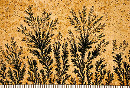

A crystal dendrite is a crystal that develops with a typical multi-branching tree-like form. Dendritic crystal growth is very common and illustrated by snowflake formation and frost patterns on a window. Dendritic crystallization forms a natural fractal pattern. Dendritic crystals can grow into a supercooled pure liquid or form from growth instabilities that occur when the growth rate is limited by the rate of diffusion of solute atoms to the interface. In the latter case, there must be a concentration gradient from the supersaturated value in the solution to the concentration in equilibrium with the crystal at the surface. Any protuberance that develops is accompanied by a steeper concentration gradients at its tip. This increases the diffusion rate to the tip. In opposition to this is the action of the surface tension tending to flatten the protuberance and setting up a flux of solute atoms from the protuberance out to the sides. However, overall, the protuberance becomes amplified. This process occurs again and again until a dendrite is produced. The term "dendrite" comes from the Greek word dendron, which means "tree".
